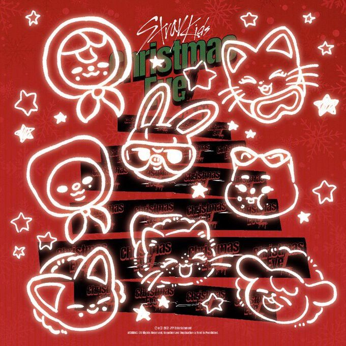
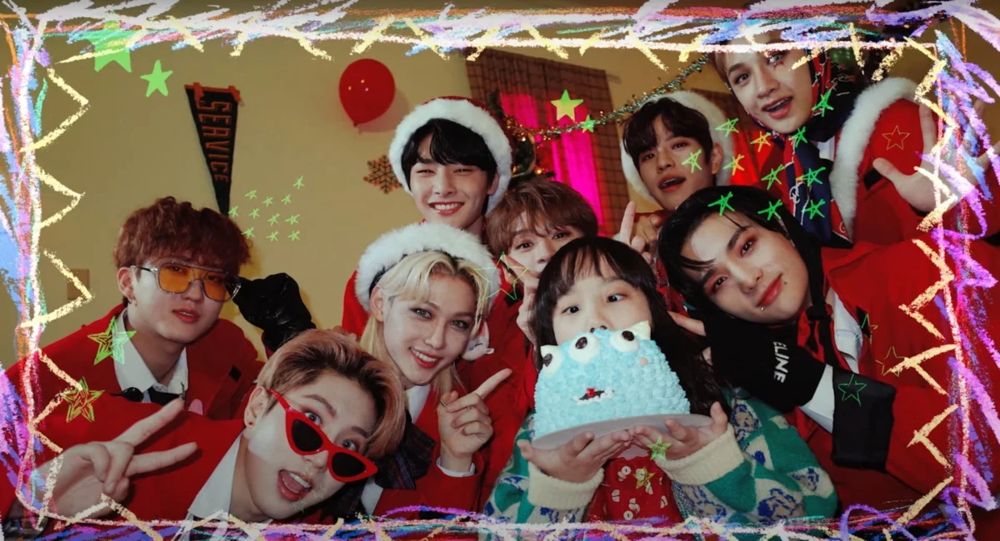

|
 |
Como regalo de fin de año para sus fans, Stray Kids lanzó el 29 de noviembre de 2021 el álbum especial navideño
Christmas EveL, con dos temas principales: "Christmas EveL" y "Winter Falls".
El nombre del álbum juega con la pronunciación de la palabra "evil" (malvado), dándole un giro travieso a la temática navideña tradicional. El lanzamiento no tuvo promoción en programas musicales, ya que fue pensado únicamente como un agradecimiento a STAY por el apoyo recibido durante ese año. |
| Fecha de lanzamiento | 29 de noviembre de 2021 |
| Tipo | Álbum especial de temporada (single album) |
| Sencillos principales | Christmas EveL y Winter Falls |
| Curiosidad | Su nombre suena como "Christmas Evil" en inglés |
